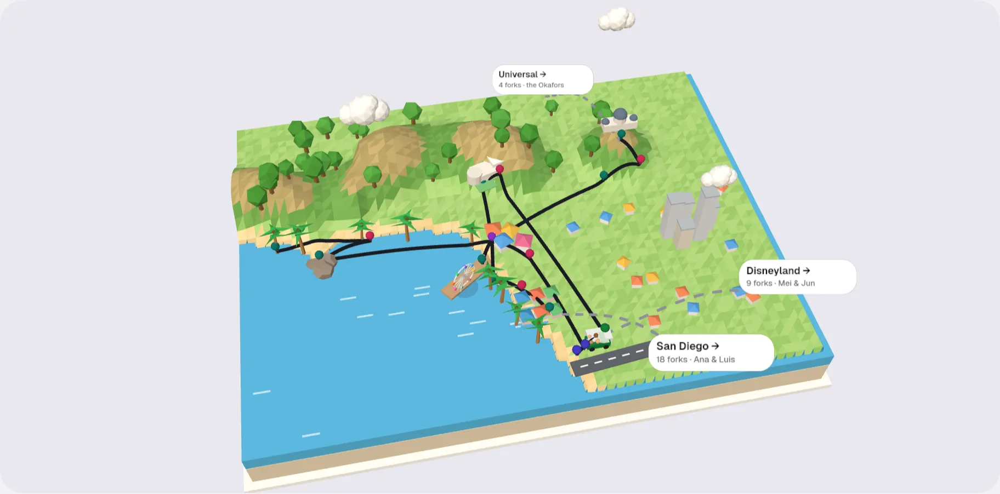
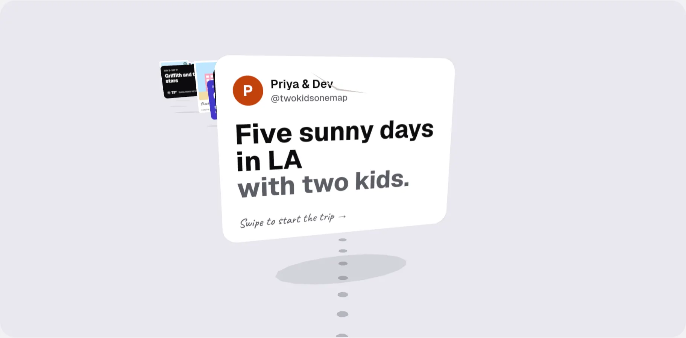
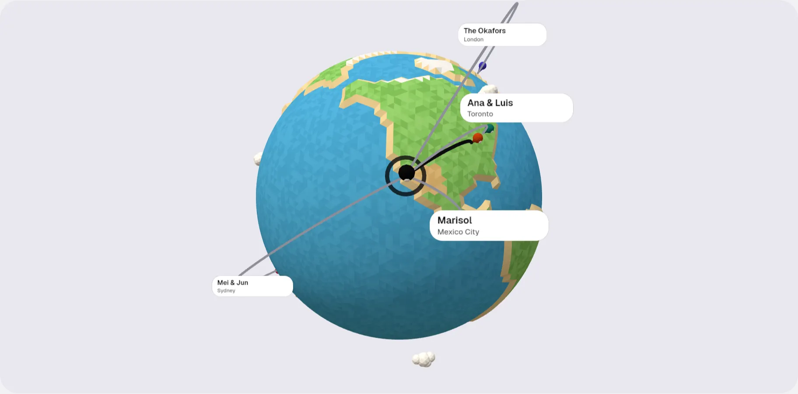

A shared trip, told like a short film.
Three ways to tell the same trip, “Five sunny days in LA with two kids” by Priya & Dev. Each opens on the creator and the story, plays the 3D scene, then the day plan with a link-out Book lane, and each has Thank and Fork. Open one, swipe the stage, tap a day, thank, fork.

1 · Toy dioramaA low-poly tile of the LA coast. Each day’s route draws itself, pins pop, a toy car carries the family. Forks are dashed roads off the edge of the map.JS 153.9 KB gzip

2 · Memory postcardsPhotos, notes and boarding passes float along a dotted path; swipe to glide through the days behind a paper plane. Forks are branches where the path splits.JS 148.6 KB gzip (+ 52 KB inlined photos) · recommended, with the globe as opener and ending

3 · Globe to streetA toy globe turns to LA as the family flies in, dives, and becomes five day islands on a turntable. Zoom out: arcs show every home a fork reached.JS 155.1 KB gzip
Notes, measured numbers and the recommendation: README.md.